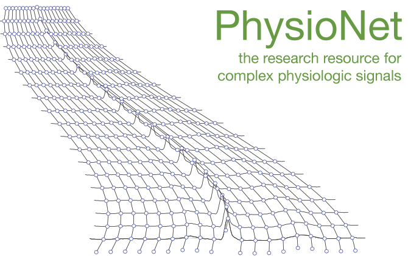
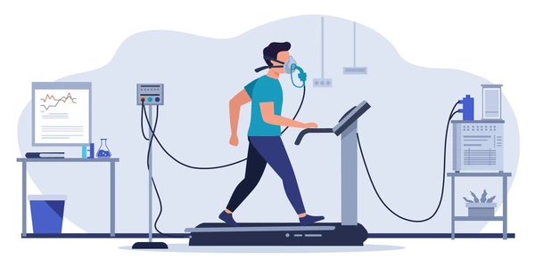

|
Sarah Jiang
Hi! I'm a Biomedical Engineering PhD student at Duke University, where I work on developing digital health tools and deep learning methods to improve health outcomes and healthcare access in the BIG IDEAs Lab, advised by Dr. Jessilyn Dunn. I'm broadly interested in leveraging wearable devices and biosignals for remote monitoring and early detection and intervention of chronic illness. I'm fortunate to be funded by the NSF Graduate Research Fellowship. |
{kind=link}
ResearchInterested in AI for multimodal biomedical data, with a focus on wearable sensing and clinical applications. |
|
 |
Demographic reporting in biosignal datasets: a comprehensive analysis of the PhysioNet open access database
S. Jiang, P. Ashar, M. Shandhi, J. Dunn The Lancet Digital Health, Nov. 2024 Full Text Comprehensive analysis of demographic reporting and biases in wearable biosignal datasets and their implications for ML model clinical deployment. |

|
Determinants of Opioid Use Disorder Relapse from the Biopsychosocial Perspective: A Systematic Review
L. Lederer, M. Liu, B. Chen, S. Jiang, S. Kim, D. MacKenzie, E. Ho, G. Guerreri, A. Roghani, J. Dunn CERSI Summit, Jan. 2024 By identifying statistically significant determinants that influence relapse, we seek to inform the development of digital health technologies for supporting relapse prevention efforts. Full paper under review. |
|
 |
Assessment of Cardiorespiratory Fitness and Functional Capacity: From Clinics to Real-World Settings
M. M. H. Shandhi, H. Jeong, S. Jiang, P. Ashar, S. Kavirajuni, A. V. Kotla, M. Fudim, H. Pontzer, W. E. Kraus, J. Dunn Under Review Systematic review of SOTA wearable sensor technologies for cardiovascular health monitoring and functional capacity assessment against gold-standard clinical measures. |
Academic Service |
Reviewer, IEEE EMBS Conference on Healthcare Innovation - Point-of-Care Technologies (HI-POCT) 2024
|
Teaching |
Head Undergraduate Teaching Assistant (Intro to Data Science) –
CS216 Spring 2023,
Fall 2023,
Spring 2024,
Fall 2024,
Spring 2025
Undergraduate Teaching Assistant (Engineering Design & Technical Communication) – EGR 101 Fall 2022 |
|
Template & code from Jon Barron. |